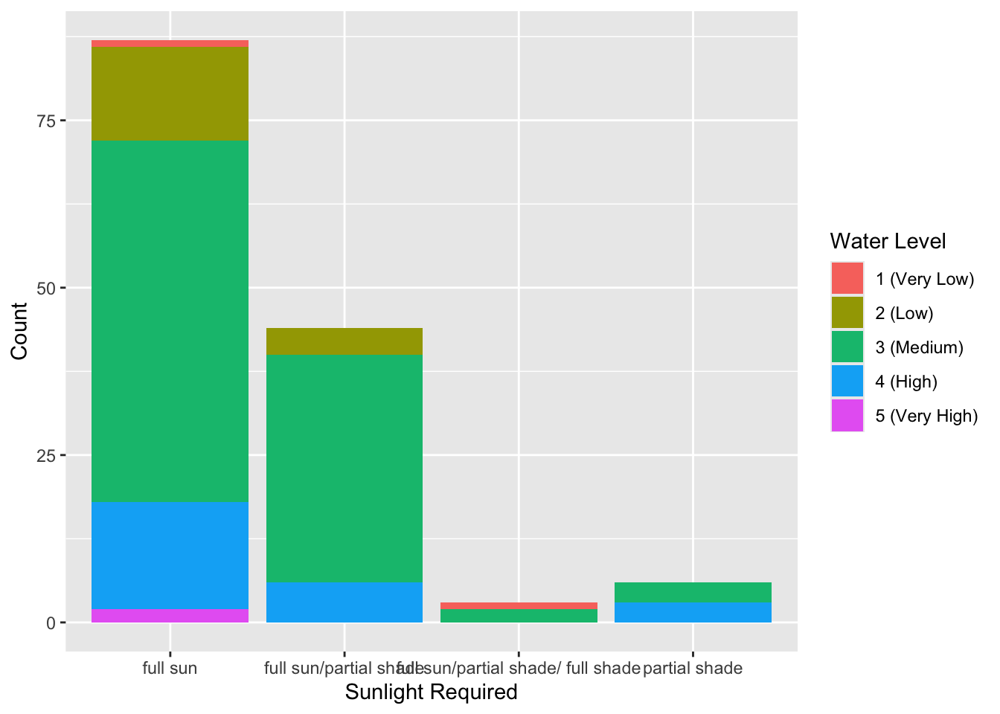
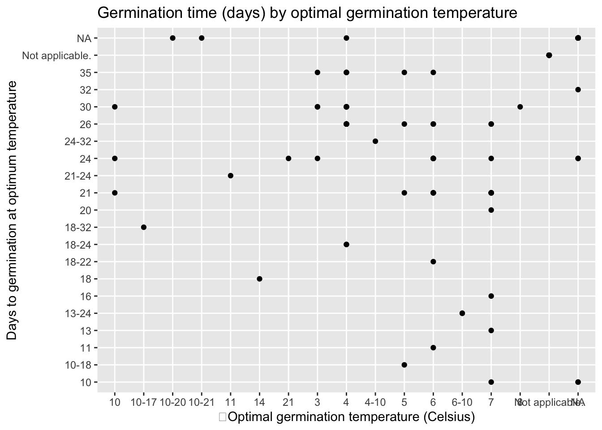

The data set I am using has a list of all the edible plants known in the world.
library(tidyverse)## ── Attaching core tidyverse packages ──────────────────────── tidyverse 2.0.0 ──
## ✔ dplyr 1.1.4 ✔ readr 2.1.6
## ✔ forcats 1.0.1 ✔ stringr 1.6.0
## ✔ ggplot2 4.0.1 ✔ tibble 3.3.1
## ✔ lubridate 1.9.4 ✔ tidyr 1.3.2
## ✔ purrr 1.2.1
## ── Conflicts ────────────────────────────────────────── tidyverse_conflicts() ──
## ✖ dplyr::filter() masks stats::filter()
## ✖ dplyr::lag() masks stats::lag()
## ℹ Use the conflicted package (<http://conflicted.r-lib.org/>) to force all conflicts to become errorslibrary(dplyr)library(tidytuesdayR)tt_datasets(2026)## Week Date Data
## 1 1 2026-01-06 Bring your own data from 2025!
## 2 2 2026-01-13 The Languages of Africa
## 3 3 2026-01-20 Astronomy Picture of the Day (APOD) Archive
## 4 4 2026-01-27 Brazilian Companies
## 5 5 2026-02-03 Edible Plants Database
## 6 6 2026-02-10 The 2026 Winter Olympics!
## 7 7 2026-02-17 Agricultural Production Statistics in New Zealand
## 8 8 2026-02-24 Science Foundation Ireland Grants Commitments
## 9 9 2026-03-03 Golem Grad Tortoise Data
## Source
## 1 <NA>
## 2 Languages of Africa
## 3 NASA API
## 4 Open data CNPJ - December 2025
## 5 Edible Plant Database
## 6 Milano-Cortina 2026 Winter Olympics Data
## 7 Figure.NZ
## 8 Science Foundation Ireland Historical Grants Commitments
## 9 Sex Ratio Bias Triggers Demographic Suicide in a Dense Tortoise Population
## Article
## 1 <NA>
## 2 Languages of Africa
## 3 Astronomy Picture of the Day
## 4 Wikipedia's List of largest Brazilian companies
## 5 GROW Observatory
## 6 Olympics Schedule and Results
## 7 Gap between people and sheep rapidly closing
## 8 Science Foundation Ireland Historical Grants Commitments
## 9 Sex Ratio Bias Triggers Demographic Suicide in a Dense Tortoise Populationplants<-tt_load("2026-02-03")## ---- Compiling #TidyTuesday Information for 2026-02-03 ----
## --- There is 1 file available ---
##
##
## ── Downloading files ───────────────────────────────────────────────────────────
##
## 1 of 1: "edible_plants.csv"plantsp5 <- plants$edible_plants
glimpse(plantsp5)## Rows: 140
## Columns: 20
## $ taxonomic_name <chr> "Pisum sativum", "Phaseolus coccineus", "Phase…
## $ common_name <chr> "Pea", "Beans (Runner)", "Beans (French)", "Be…
## $ cultivation <chr> "Legume", "Legume", "Legume", "Legume", "Legum…
## $ sunlight <chr> "Full sun", "Full sun", "Full sun", "Full sun/…
## $ water <chr> "Very High", "Medium", "Medium", "Very Low", "…
## $ preferred_ph_lower <dbl> 6.0, 6.0, 6.0, 6.0, 6.0, 6.0, 6.0, 5.5, 6.0, 5…
## $ preferred_ph_upper <dbl> 7.5, 6.8, 7.5, 7.0, 7.5, 7.5, 7.5, 7.5, 7.5, 7…
## $ nutrients <chr> "Medium", "Medium", "Medium", "Medium", "High"…
## $ soil <chr> "Loamy", "Loamy and clay", "Any well-drained a…
## $ season <chr> "Annual", "Annual", "Annual", "Annual", "bienn…
## $ temperature_class <chr> "Half hardy", "Tender", "Tender", "Hardy", "Ha…
## $ temperature_germination <chr> "24", "26", "26", "10", "26", "30", "26", "26"…
## $ temperature_growing <chr> "4-24", "16-30", "16-30", "8-15", "7-30", "7-3…
## $ days_germination <chr> "6", "7", "7", "7", "4", "4", "4", "5", "4", "…
## $ days_harvest <chr> "55-75", "65-85", "40-55", "85-115", "55-85", …
## $ nutritional_info <chr> "A good source of vitamin K, manganese, and di…
## $ energy <dbl> 80, 27, 27, 88, 25, 34, 35, 31, 50, NA, NA, NA…
## $ sensitivities <chr> "Drought intolerant", "Drought intolerant", "D…
## $ description <chr> "The pea is the small spherical seed, or the s…
## $ requirements <chr> "Require a sunny, nutrient-rich, moisture-rete…I am going to be visualizing different relationships between different variables. In this portfolio, I will create three visualizations between different variables. Those relationships will be sunlight and water (to test if more sunlight needed=more water needed), temperature germination and days germination and soil and water to see if there is a correlation between different types of soil and water necessity.
plantsp5$water## [1] "Very High" "Medium" "Medium" "Very Low" "High" "Medium"
## [7] "Medium" "Medium" "Low" "Medium" "Medium" "High"
## [13] "High" "Medium" "High" "High" "High" "Low"
## [19] "Medium" "Medium" "Low" "Medium" "very high" "Medium"
## [25] "Medium" "High" "High" "High" "High" "High"
## [31] "High" "High" "Medium" "High" "High" "Medium"
## [37] "Medium" "Medium" "Medium" "Medium" "Medium" "High"
## [43] "Medium" "Medium" "High" "High" "High" "Medium"
## [49] "Medium" "High" "Medium" "High" "Medium" "Medium"
## [55] "Medium" "Medium" "Medium" "Medium" "Medium" "Medium"
## [61] "Low" "Low" "Medium" "Medium" "Medium" "Medium"
## [67] "Medium" "Medium" "Medium" "Medium" "Medium" "Medium"
## [73] "Medium" "Medium" "Medium" "Medium" "Medium" "Medium"
## [79] "High" "Medium" "Medium" "Medium" "Medium" "Very low"
## [85] "Low" "high" "Low" "Medium" "Medium" "Low"
## [91] "Medium" "Medium" "Medium" "Medium" "Medium" "Medium"
## [97] "Medium" "High" "Medium" "Medium" "Medium" "Medium"
## [103] "Medium" "Medium" "Medium" "Medium" "Medium" "Medium"
## [109] "Medium" "Medium" "Medium" "Medium" "Medium" "Medium"
## [115] "Medium" "Medium" "Medium" "Medium" "Medium" "Medium"
## [121] "Medium" "Low" "Low" "Medium" "Medium" "Medium"
## [127] "Medium" "Low" "Low" "Medium" "High" "Low"
## [133] "Low" "Low" "Medium" "Low" "Low" "Low"
## [139] "Medium" "Medium"First, I’ll visualize the sunlight and water levels, but to do this, I am going to categorize the levels of water needed in numbers increasing by amount 1-
plantsp5 <- plantsp5 %>%
mutate(
waternumber = case_when(
water == "Very High" ~ "5 (Very High)",
water == "very high" ~ "5 (Very High)",
water == "High" ~ "4 (High)",
water == "high" ~ "4 (High)",
water == "Medium" ~ "3 (Medium)",
water == "medium" ~ "3 (Medium)",
water == "Low" ~ "2 (Low)",
water == "low" ~ "2 (Low)",
water == "Very Low" ~ "1 (Very Low)",
water == "Very low" ~ "1 (Very Low)"
)
)plantsp5$waternumber## [1] "5 (Very High)" "3 (Medium)" "3 (Medium)" "1 (Very Low)"
## [5] "4 (High)" "3 (Medium)" "3 (Medium)" "3 (Medium)"
## [9] "2 (Low)" "3 (Medium)" "3 (Medium)" "4 (High)"
## [13] "4 (High)" "3 (Medium)" "4 (High)" "4 (High)"
## [17] "4 (High)" "2 (Low)" "3 (Medium)" "3 (Medium)"
## [21] "2 (Low)" "3 (Medium)" "5 (Very High)" "3 (Medium)"
## [25] "3 (Medium)" "4 (High)" "4 (High)" "4 (High)"
## [29] "4 (High)" "4 (High)" "4 (High)" "4 (High)"
## [33] "3 (Medium)" "4 (High)" "4 (High)" "3 (Medium)"
## [37] "3 (Medium)" "3 (Medium)" "3 (Medium)" "3 (Medium)"
## [41] "3 (Medium)" "4 (High)" "3 (Medium)" "3 (Medium)"
## [45] "4 (High)" "4 (High)" "4 (High)" "3 (Medium)"
## [49] "3 (Medium)" "4 (High)" "3 (Medium)" "4 (High)"
## [53] "3 (Medium)" "3 (Medium)" "3 (Medium)" "3 (Medium)"
## [57] "3 (Medium)" "3 (Medium)" "3 (Medium)" "3 (Medium)"
## [61] "2 (Low)" "2 (Low)" "3 (Medium)" "3 (Medium)"
## [65] "3 (Medium)" "3 (Medium)" "3 (Medium)" "3 (Medium)"
## [69] "3 (Medium)" "3 (Medium)" "3 (Medium)" "3 (Medium)"
## [73] "3 (Medium)" "3 (Medium)" "3 (Medium)" "3 (Medium)"
## [77] "3 (Medium)" "3 (Medium)" "4 (High)" "3 (Medium)"
## [81] "3 (Medium)" "3 (Medium)" "3 (Medium)" "1 (Very Low)"
## [85] "2 (Low)" "4 (High)" "2 (Low)" "3 (Medium)"
## [89] "3 (Medium)" "2 (Low)" "3 (Medium)" "3 (Medium)"
## [93] "3 (Medium)" "3 (Medium)" "3 (Medium)" "3 (Medium)"
## [97] "3 (Medium)" "4 (High)" "3 (Medium)" "3 (Medium)"
## [101] "3 (Medium)" "3 (Medium)" "3 (Medium)" "3 (Medium)"
## [105] "3 (Medium)" "3 (Medium)" "3 (Medium)" "3 (Medium)"
## [109] "3 (Medium)" "3 (Medium)" "3 (Medium)" "3 (Medium)"
## [113] "3 (Medium)" "3 (Medium)" "3 (Medium)" "3 (Medium)"
## [117] "3 (Medium)" "3 (Medium)" "3 (Medium)" "3 (Medium)"
## [121] "3 (Medium)" "2 (Low)" "2 (Low)" "3 (Medium)"
## [125] "3 (Medium)" "3 (Medium)" "3 (Medium)" "2 (Low)"
## [129] "2 (Low)" "3 (Medium)" "4 (High)" "2 (Low)"
## [133] "2 (Low)" "2 (Low)" "3 (Medium)" "2 (Low)"
## [137] "2 (Low)" "2 (Low)" "3 (Medium)" "3 (Medium)"plantsp5 <- plantsp5 %>%
mutate(sunlight=tolower(sunlight))plantsp5 <- plantsp5 %>%
mutate(
sunlight = recode(
sunlight,
"full sun/partial shade/full shade" = "full sun/partial shade/ full shade"))plantsp5 %>%
ggplot(aes(x = sunlight, fill = factor(waternumber))) +
geom_bar(position = "stack") +
labs(
x = "Sunlight Required",
y = "Count",
fill = "Water Level"
)
This tells us a lot about each category. The data doesn’t look very convinceing that there is a correlation between overall sunlight requirement and water requirement. I do however think this data isn’t exactly the best at categorizing it’s data. I had to do a lot of work above to combine/even out categories and I think that there should be a more numerical way of categorizing some of the sunlight/water level statistics. This would make it much easier to analyze (min rainfall per year required, min sunny days per year required etc.)Next I will visualize temperature germination and days germination
plantsp5 %>%
ggplot(aes(x=days_germination, y=temperature_germination)) +
geom_point() + geom_smooth(method="lm") +
labs(
x= " Optimal germination temperature (Celsius)",
y= "Days to germination at optimum temperature",
title = "Germination time (days) by optimal germination temperature"
)## `geom_smooth()` using formula = 'y ~ x'
What I’ve learned from visualizing this data visualizaiton is that this dataset kinda sucks. You can see both along the y and x axis that there are some data points that are ranges and some that are whole numbers. What would help a lot is if we just had whole numbers. Perhaps if this dataset’s variable was minimum_temp instead of temperature, we might be able to visualize a result in a way that shows some sort of correlation. There are also some that are n/a or not available which eliminates data from analysis.
I was hoping to find some sort of correlation (positive or negative) between temperature and days, such that I could plot the dots and ad a line over the data but because the data had ranges and some didn’t even apply, it was hard to discern that.